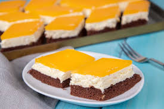
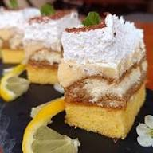
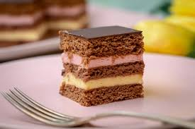
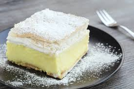
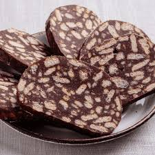
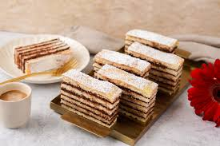

Magyarország nem csak gazdag történelmi múltjáról és lenyűgöző tájairól ismert, hanem különleges gasztronómiájáról is, amelynek szerves részét képezik a híres magyar sütemények. Ezek az édességek több mint finomságok, ők a magyar kultúra, hagyomány és vendégszeretet megtestesítői. A magyar süteménykultúra sokszínűsége és gazdagsága tükrözi a nemzet kreativitását és az évszázadok során tökéletesített cukrászművészetét.
A retró sütemények varázsa abban rejlik, hogy nemcsak az ízlelőbimbóinkat kápráztatják el, hanem régi, gyerekkori emlékeinket is felébresztik. Egy-egy édes falat után szinte újra ott ülünk nagymamánk konyhájában, ahol a frissen sült finomságok illata lengte be a levegőt, és minden szelet süteményben ott volt a gondoskodás és a hatalmas szeretet. Ezek a klasszikus desszertek generációkat kötnek össze, és ma is legalább ugyanolyan örömet okoznak, mint annak idején, gyerekkorunkban.





